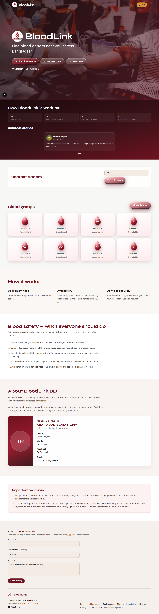
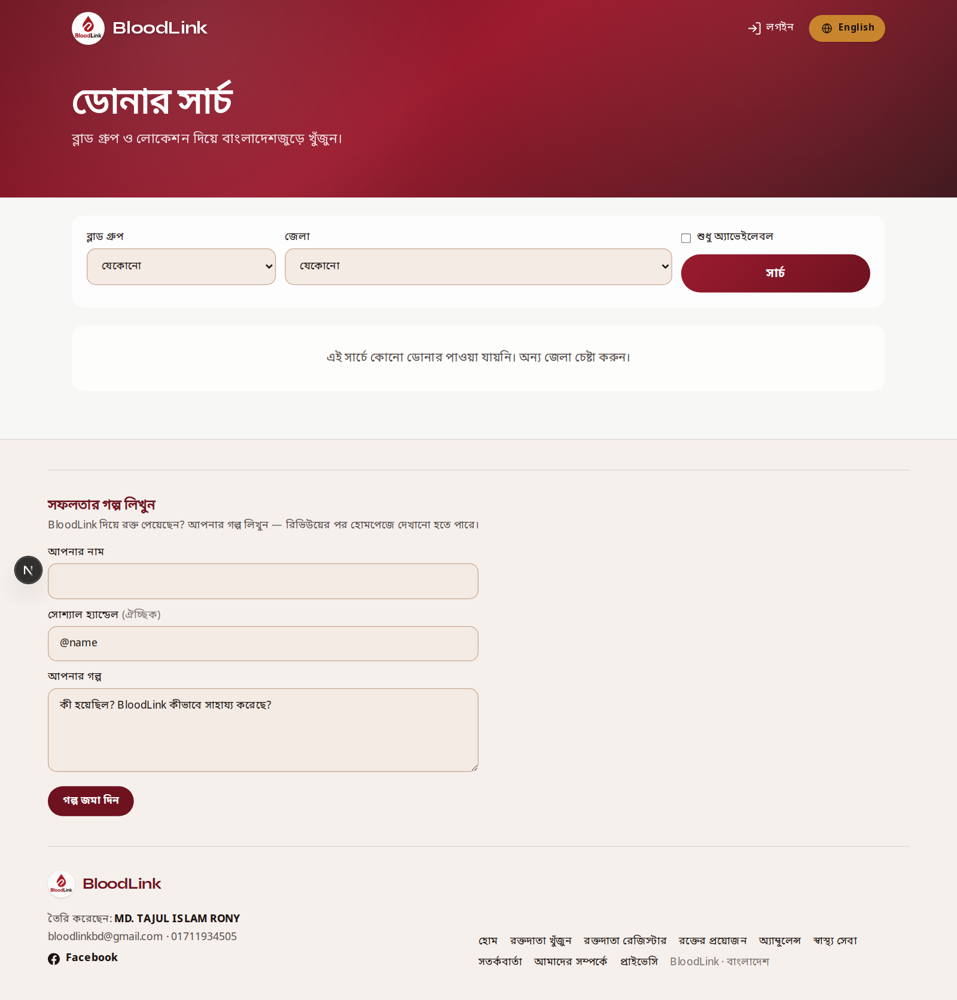
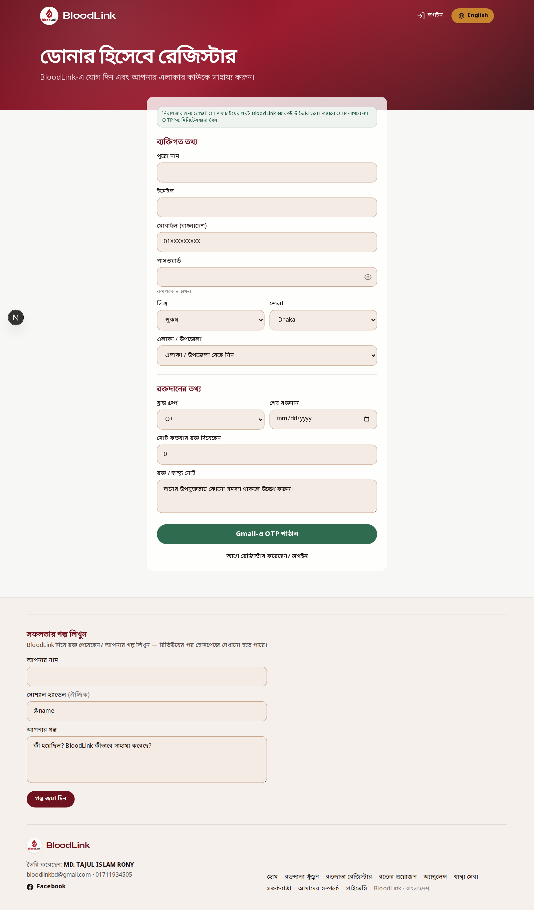
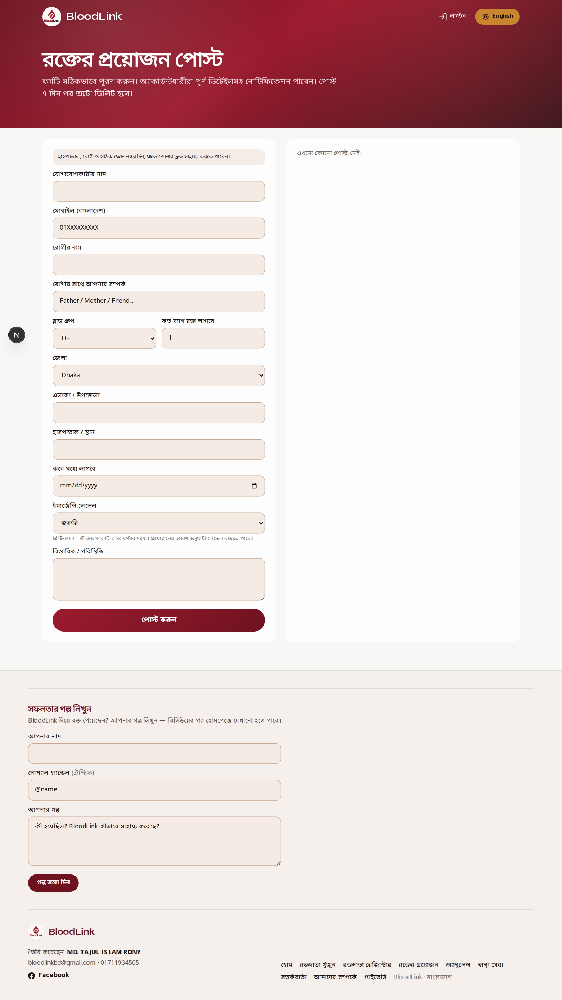
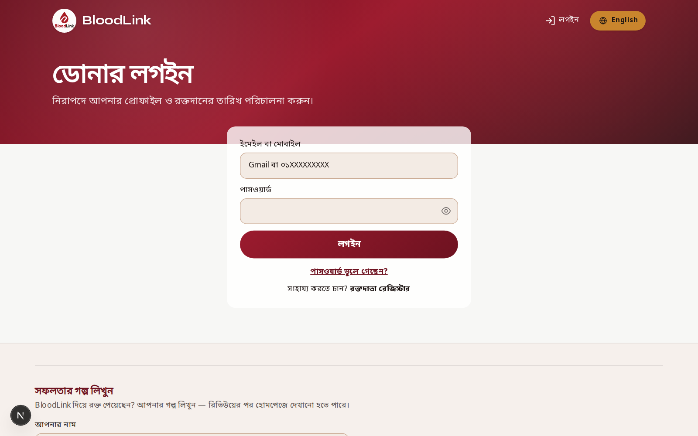
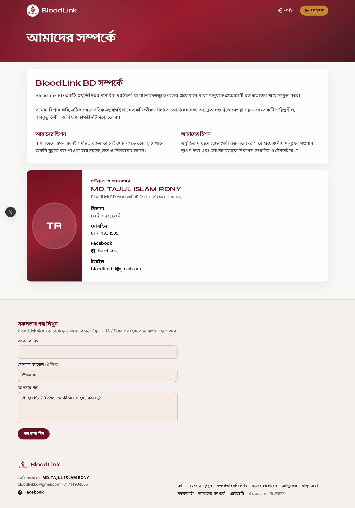

BloodLink BD · Volunteer Guide
গাইড ১: BloodLink-এর কাজ ও ইউজারকে বোঝানো
ভলান্টিয়ার প্রশিক্ষণ ম্যানুয়াল — স্ক্রিনশটসহ ধাপভিত্তিক নির্দেশনা
এই গাইড কাকে? BloodLink ভলান্টিয়ারদের জন্য — যাতে সাধারণ ইউজার/ডোনারকে ওয়েবসাইটের কাজ সহজে বোঝাতে পারেন।
১. BloodLink কী?
BloodLink BD একটি রক্তদাতা খোঁজা, রক্তের প্রয়োজন পোস্ট করা এবং ডোনার ম্যানেজমেন্টের ওয়েবসাইট। লক্ষ্য: দ্রুত রক্তদাতা সংযোগ ও জীবন বাঁচানো।

হোমপেজ — এখান থেকেই ইউজারকে পরিচয় করিয়ে দিন
২. মূল কাজগুলো (ইউজারকে যা দেখাবেন)
| কাজ | পেজ | ইউজার কী পাবে |
|---|
| ডোনার খোঁজা | /find | ব্লাড গ্রুপ, জেলা দিয়ে ডোনার খুঁজে ফোন করা |
| ডোনার রেজিস্ট্রেশন | /register | নিজে ডোনার হয়ে প্রোফাইল তৈরি |
| রক্তের প্রয়োজন পোস্ট | /requests | জরুরি রক্তের অনুরোধ দেখা/পোস্ট |
| লগইন ও ড্যাশবোর্ড | /login | প্রোফাইল, ডোনেশন তারিখ, নোটিফিকেশন |
| স্বাস্থ্য সেবা | /healthcare | হাসপাতাল খোঁজা ও অ্যাপয়েন্টমেন্ট |
৩. ধাপে ধাপে ইউজারকে বোঝানোর স্ক্রিপ্ট
A) ডোনার খুঁজতে চাইলে
বলুন: “ব্লাড গ্রুপ ও এলাকা দিয়ে ডোনার খুঁজে সরাসরি কল করতে পারবেন।”
- হোম থেকে Find / খুঁজুন মেনু দেখান।
- ব্লাড গ্রুপ + জেলা সিলেক্ট করতে বলুন।
- ফলাফলে ফোন নম্বরে কল করতে দেখান।

ডোনার খোঁজার পেজ — ফিল্টার ও ফলাফল দেখান
B) নিজে ডোনার হতে চাইলে
বলুন: “একবার রেজিস্টার করলে জরুরি প্রয়োজনে নোটিফিকেশন পেতে পারেন।”
- Register পেজ খুলুন।
- নাম, মোবাইল, ব্লাড গ্রুপ, জেলা সঠিকভাবে দিতে বলুন।
- OTP দিয়ে ভেরিফাই → Allow notifications (পারলে)।

রেজিস্ট্রেশন ফর্ম — ধাপগুলো একসাথে দেখান
C) রক্তের প্রয়োজন পোস্ট
বলুন: “হাসপাতাল/রোগীর জন্য জরুরি রক্তের অনুরোধ পোস্ট করতে পারবেন।”

রক্তের প্রয়োজন / রিকোয়েস্ট পেজ
D) লগইন ও নিজের প্রোফাইল
বলুন: “লগইন করে শেষ রক্তদানের তারিখ আপডেট রাখলে সঠিকভাবে উপলব্ধ দেখাবে।”

ডোনার লগইন পেজ
E) সাইট সম্পর্কে বিশ্বাস তৈরি

About পেজ — বিশ্বাসযোগ্যতা বোঝাতে ব্যবহার করুন
৪. ভলান্টিয়ারের নিজের কাজ (BloodLink অংশে)
- প্রতি মাসে টার্গেট অনুযায়ী নতুন ডোনার রেজিস্টার/অ্যাড করা
- ডোনারকে সঠিক তথ্য দিতে সাহায্য করা
- জরুরি রক্তের ক্ষেত্রে ডোনার–রোগী সংযোগ
- নোটিফিকেশন Allow করতে উৎসাহ দেওয়া
- ভুল তথ্য থাকলে অ্যাডমিনকে জানানো
৫. দ্রুত FAQ
প্রশ্ন: অ্যাপ ডাউনলোড লাগে?
উত্তর: না, ব্রাউজার/ওয়েবসাইটই যথেষ্ট। iPhone-এ Home Screen-এ যোগ করলে সুবিধা হয়।
প্রশ্ন: তথ্য কি নিরাপদ?
উত্তর: লগইন ও OTP দিয়ে অ্যাকাউন্ট সুরক্ষিত। ফোন নম্বর শুধু প্রয়োজনমতো যোগাযোগের জন্য।
প্রশ্ন: টাকা লাগে?
উত্তর: ডোনার রেজিস্ট্রেশন ও খোঁজা বিনামূল্যে।